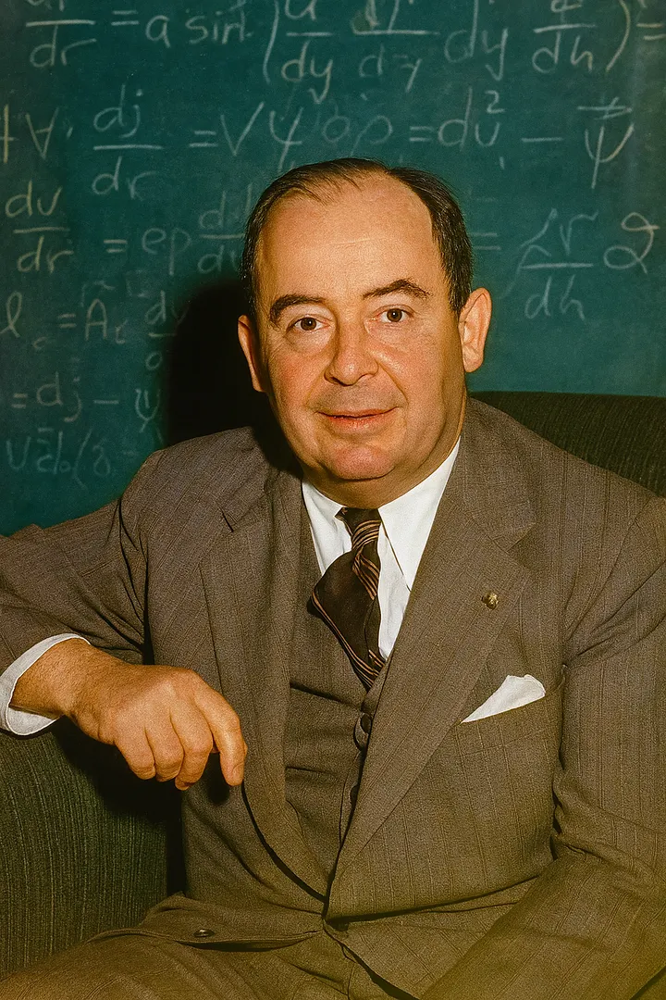

foi um matemático americano nascido na Hungria(1903 a 1957). Influenciou a teoria quântica , a teoria dos autômatos , a economia e o planejamento de defesa. foi pioneiro na teoria dos jogos e, juntamente com Alan Turing e Claude Shannon , foi um dos inventores conceituais do programa digital armazenado.computador .
Arquitetura de Computadores e o EDVAC
No relatório sobre o computador EDVAC (1945), formalizou a estrutura que divide o computador em CPU (com Unidade Lógica e Aritmética), Unidade de Controle, Memória e Entrada/Saída.
Essa inovação permitiu que os programas fossem armazenados na própria memória digital como dados — eliminando a necessidade de reconfigurar cabos fisicamente, como ocorria no ENIAC.
Essa dinâmica gerou o conceito técnico do Gargalo de von Neumann, a limitação de transferência entre memória e processador que a engenharia de computação busca otimizar até hoje.
Teoria dos Jogos e Estratégia Geopolítica
Após provar o Teorema Minimax em 1928, lançou em 1944 a obra Theory of Games and Economic Behavior ao lado do economista Oskar Morgenstern.
O livro estabeleceu a análise matemática de decisões estratégicas em cenários de incerteza, redefinindo a microeconomia.
Durante a Guerra Fria, como conselheiro da Força Aérea americana e da RAND Corporation, aplicou a teoria dos jogos ao planejamento militar nuclear, formulando os princípios conceituais da Destruição Mútua Assegurada (MAD).
Fundamentação da Física Quântica
Em 1932, publicou Fundamentos Matemáticos da Mecânica Quântica, unificando a mecânica matricial de Werner Heisenberg e a mecânica ondulatória de Erwin Schrödinger.
Ele utilizou o aparato dos Espaços de Hilbert para criar uma linguagem axiomática rigorosa para a física subatômica.
Na matemática pura, criou a teoria das Álgebras de operadores (hoje chamadas de Álgebras de von Neumann) e fez contribuições cruciais para a Teoria Ergódica.
Implosão Nuclear no Projeto Manhattan
No laboratório de Los Alamos, trabalhou ao lado de J.
Robert Oppenheimer e projetou o mecanismo de lentes de implosão — arranjos moldados de explosivos convencionais que comprimiram de forma simétrica o núcleo de plutônio da bomba atômica Fat Man.
Ele também desenvolveu o cálculo numérico para prever a propagação de ondas de choque e determinar a altitude ideal de detonação para impacto máximo.
Autômatos Celulares e Biologia Teórica
Desenvolveu o modelo do Construtor Universal, um autômato celular capaz de ler um conjunto de instruções, construir uma cópia física exata de si mesmo e transferir esse código-fonte para a réplica.
O trabalho antecedeu em anos a descoberta da estrutura de replicação do DNA, servindo de fundação teórica para a biologia computacional, a robótica auto-replicável e a inteligência artificial.
Teoria dos Conjuntos e Álgebra
ntroduziu a definição formal moderna de números ordinais transfinitos e criou as Álgebras de Von Neumann no estudo de operadores lineares em espaços de Hilbert.

John von Neumann trabalhando no Instituto de Estudos Avançados.